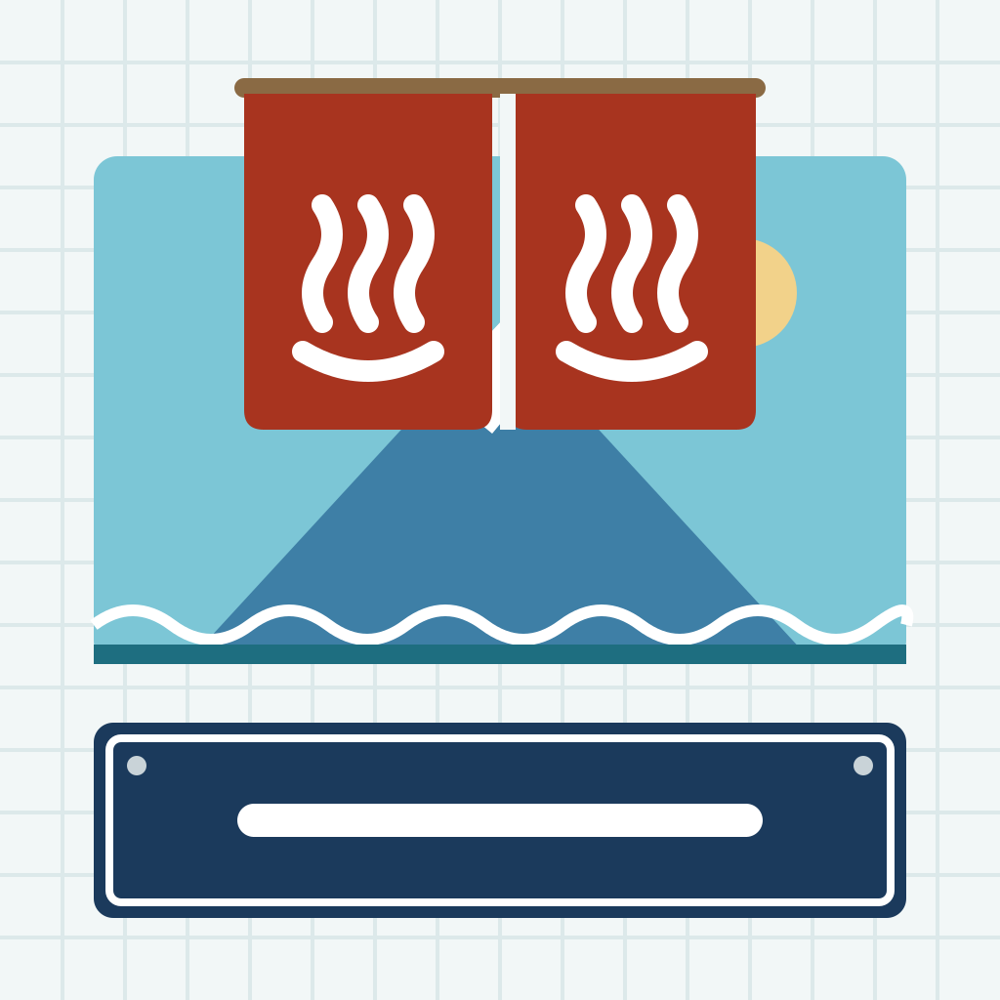
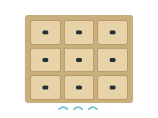

<!doctype html>
<html lang="ja">
<head>
<meta charset="utf-8">
<meta name="mock-size" content="1400x2900">
<meta name="mock-scale" content="2">
<title>B-5 昭和の銭湯と看板 — ブランドシート</title>
<meta name="mock-fonts" content="Yuji Syuku|Rampart One|Zen Kaku Gothic New">
<link rel="stylesheet" href="https://fonts.googleapis.com/css2?family=Yuji+Syuku&family=Rampart+One&family=Zen+Kaku+Gothic+New:wght@500;700&display=block">
<link rel="stylesheet" href="../../template/tokens.css">
<link rel="stylesheet" href="../../template/frame.css">
<link rel="stylesheet" href="theme.css">
<style>
  .sheet { width: 1400px; height: 2900px; padding: 56px; background: var(--tile); }
  .sheet-head { display: flex; align-items: center; gap: 32px; }
  .sheet-head p { font-size: 18px; font-weight: 700; line-height: 1.6; }
  .grid { display: grid; grid-template-columns: 600px 1fr; gap: 48px; margin-top: 8px; }
  .sheet-section > h2 { display: inline-block; padding: 6px 16px 4px; border-radius: 4px; background: var(--wood); font-weight: 400; box-shadow: inset 0 0 0 2px #C9AE7E, 0 2px 0 #B79A66; }
  .panel { padding: 24px; border-radius: 8px; background: #FFFFFF; box-shadow: var(--shadow-card); }
  .icon-big { display: block; width: 512px; height: 512px; border-radius: 115px; border: 1px solid rgba(0, 0, 0, .15); }
  .icon-note { margin-top: 10px; font-size: 15px; font-weight: 700; color: var(--color-text-secondary); }
  .home-row { display: flex; gap: 22px; align-items: flex-start; margin-top: 18px; padding: 22px 24px; border-radius: 24px;
    background: linear-gradient(160deg, #5BA8E8, #9C7BEA); }
  .home-app { display: flex; flex-direction: column; align-items: center; gap: 6px; width: 64px; color: #FFFFFF; font-size: 12px; font-weight: 700; }
  .home-app img, .home-app span.dummy { width: 60px; height: 60px; border-radius: 13.4px; }
  .home-app span.dummy { background: rgba(255, 255, 255, .55); }
  .logo-panel { display: flex; flex-direction: column; gap: 26px; align-items: flex-start; }
  .nav-sample { width: 402px; border: 2px solid var(--aqua); border-radius: 8px; overflow: hidden; background: var(--tile); }
  .nav-sample .nav-large-title { padding: 10px 18px 14px; }
  .empty-row { display: grid; grid-template-columns: 1fr 1fr; gap: 20px; }
  .empty { display: flex; flex-direction: column; align-items: center; gap: 8px; text-align: center; }
  .empty img { width: 240px; height: 180px; }
  .empty strong { font-family: var(--font-heading); font-size: 19px; }
  .empty p { font-size: 15px; color: var(--color-text-secondary); font-weight: 700; }
  .type-row { display: flex; flex-direction: column; gap: 6px; padding: 14px 0; border-bottom: 1px dashed var(--color-separator); }
  .type-row:last-child { border-bottom: none; }
  .type-name { font-size: 14px; font-weight: 800; color: var(--color-text-secondary); }
  .t-heading { font-family: var(--font-heading); font-size: 34px; line-height: 1.3; }
  .t-latin { font-family: var(--font-sign); font-size: 30px; color: var(--aqua-deep); }
  .t-body800 { font-size: 22px; font-weight: 700; }
  .t-body { font-size: 17px; font-weight: 500; line-height: 1.6; }
  .parts-grid { display: grid; grid-template-columns: 1fr 1fr; gap: 28px; align-items: start; }
  .parts-col { display: flex; flex-direction: column; gap: 22px; }
  .row { display: flex; flex-wrap: wrap; gap: 14px; align-items: center; }
  .tabbar-sample { position: relative; width: 402px; height: 90px; }
  .tabbar-sample .tab-bar { bottom: 8px; }
  .pins-sample { position: relative; height: 90px; width: 100%; border-radius: 8px; background: var(--map-land); }
  .contrast-table { background: #FFFFFF; box-shadow: var(--shadow-card); }
  .contrast-table th, .contrast-table td { border-bottom: 1px solid var(--color-separator); }
  .swatch-chip { border-radius: 2px; border: 1px solid rgba(43, 36, 32, .25); }
  /* シェアカード（360x450pt。SNS に共有する画像） */
  .share { width: 360px; height: 450px; display: flex; flex-direction: column; overflow: hidden; }
  .share-head { display: flex; align-items: center; justify-content: center; padding: 8px 18px; }
  .share-body { flex: 1; display: flex; flex-direction: column; gap: 12px; padding: 16px 18px; }
  .share-title { font-weight: 700; font-size: 20px; line-height: 1.35; }
  .share-spots { display: flex; flex-direction: column; gap: 8px; padding: 12px; border-radius: 8px; background: var(--tile); }
  .share-spots li { display: flex; align-items: center; gap: 10px; font-size: 16px; font-weight: 700; white-space: nowrap; }
  .share-foot { margin-top: auto; display: flex; align-items: flex-end; justify-content: space-between; }
  .share-foot strong { display: block; color: var(--vermilion); font-size: 14px; font-weight: 700; }
  .share-foot span { font-size: 13px; font-weight: 700; color: var(--color-text-secondary); }
  .qr { width: 84px; height: 84px; padding: 6px; border-radius: 6px; background: #FFFFFF; }
</style>
</head>
<body>
<div id="app"></div>
<script src="../../template/mock-data.js"></script>
<script src="../../template/icons.js"></script>
<script src="../../template/mock.js"></script>
<script src="theme.js"></script>
<script>
  // ブランドシート: アイコン・ロゴ・空の状態のイラスト・配色とコントラスト比・書体・部品・シェアカード
  const { data, parts, icon, esc } = Mock;
  const post = data.posts[0];
  // QR コードの代わりの模様（モックなので読み取れない）
  const qrCells = [];
  for (let y = 0; y < 21; y += 1) {
    for (let x = 0; x < 21; x += 1) {
      const finder = (x < 7 && y < 7) || (x > 13 && y < 7) || (x < 7 && y > 13);
      const ring = finder && (x % 14 === 0 || y % 14 === 0 || x % 14 === 6 || y % 14 === 6 || (x % 14 > 1 && x % 14 < 5 && y % 14 > 1 && y % 14 < 5));
      const noise = !finder && ((x * 7 + y * 13 + x * y) % 5 < 2);
      if (ring || noise) {
        qrCells.push(`<rect x="${x}" y="${y}" width="1" height="1"/>`);
      }
    }
  }
  const qr = `<svg class="qr" viewBox="0 0 21 21" aria-hidden="true"><g fill="#22303A">${qrCells.join('')}</g></svg>`;
  const shareCard = `<div class="share" style="background:#FFFFFF;box-shadow:var(--shadow-card);border-radius:8px"><div style="height:100%;display:flex;flex-direction:column">
    <div class="share-head" style="border-bottom:4px solid var(--aqua)">${Mock.logo(22)}</div>
    <div class="share-body">
      <p class="share-title">${esc(post.title)}</p>
      <div class="badges"><span class="badge" style="color:var(--color-text-secondary)">${icon('mappin', { size: 13 })}${esc(post.prefecture)} ${esc(post.city)}</span>${parts.categoryBadge(post)}</div>
      <ol class="share-spots">${post.spots.map(s => `<li>${parts.rank(s.order)}${esc(s.name)}</li>`).join('')}</ol>
      <div class="share-foot"><div><strong>${esc(data.strings.scanToSee)}</strong><span>butchake-map.example</span></div>${qr}</div>
    </div>
  </div></div>`;
  const pinsSample = Mock.mapIllustration([]).replace('<div class="map-illustration">', '<div class="map-illustration" style="display:none">');
  Mock.mount(`<div class="sheet">
    <div class="sheet-head">${Mock.logo(46)}
      <p>B-5「昭和の銭湯と看板」<br>水色と朱。白いタイルの目地、富士山のペンキ絵、のれん、下足札の木札、ホーロー看板で、ひとっ風呂あびて本音をこぼす気楽さを出す。</p></div>
    <div class="grid">
      <div>
        <section class="sheet-section"><h2>アプリアイコン</h2>
          
          <p class="icon-note">1024x1024 で描いた SVG（角丸は iOS がかけるため、ここでは見え方の確認として丸めて表示）</p>
          <div class="home-row">
            <span class="home-app"><span class="dummy"></span>写真</span>
            <span class="home-app">ぶっちゃけ</span>
            <span class="home-app"><span class="dummy"></span>天気</span>
            <span class="home-app"><span class="dummy"></span>メモ</span>
            <span class="home-app"><span class="dummy"></span>時計</span>
          </div>
          <p class="icon-note">ホーム画面の大きさ（60pt 相当）</p></section>
        <section class="sheet-section"><h2>ロゴ</h2>
          <div class="panel logo-panel">${Mock.logo(56)}
            <div class="nav-sample">${Mock.navBar({ large: true, titleHTML: Mock.logo(28) })}</div>
            <p class="icon-note">ナビゲーションに置いたとき（ホームの大きなタイトルの位置）</p></div></section>
        <section class="sheet-section"><h2>空の状態のイラスト</h2>
          <div class="panel empty-row">
            <div class="empty"><strong>${esc(data.strings.noPosts)}</strong><p>${esc(data.strings.noPostsDescription)}</p></div>
            <div class="empty"><strong>${esc(data.strings.noResults)}</strong><p>${esc(data.strings.noResultsDescription)}</p></div>
          </div></section>
      </div>
      <div>
        <section class="sheet-section"><h2>カラーパレット</h2>${Mock.paletteSwatches()}</section>
        <section class="sheet-section"><h2>コントラスト比（WCAG AA）</h2>${Mock.paletteTable()}</section>
        <section class="sheet-section"><h2>書体</h2><div class="panel">
          <div class="type-row"><span class="type-name">見出し・木札・のれん: Yuji Syuku（OFL）</span>
            <span class="t-heading">ぶっちゃけ湯 壱番 弐番 Honne</span></div>
          <div class="type-row"><span class="type-name">ロゴ・看板: Rampart One（OFL）</span>
            <span class="t-latin">ぶっちゃけmap 123</span></div>
          <div class="type-row"><span class="type-name">タイトル: Zen Kaku Gothic New Bold（OFL）</span>
            <span class="t-body800">金沢市民が本気で教える三大回転寿司 Best 3</span></div>
          <div class="type-row"><span class="type-name">本文: Zen Kaku Gothic New Medium 17pt（OFL）</span>
            <span class="t-body">ランチのコスパと鮮度は県内トップクラス。The quick brown fox jumps over the lazy dog.</span></div>
        </div></section>
      </div>
    </div>
    <section class="sheet-section"><h2>部品</h2>
      <div class="parts-grid">
        <div class="parts-col">
          ${parts.postCard(data.posts[1])}
          <div class="row">${Object.keys(data.categories).map(c => parts.categoryBadge({ category: c })).join('')}</div>
          <div class="row">${Object.keys(data.authorTypes).map(a => parts.authorBadge({ authorType: a })).join('')}
            <span class="fuda">今週のぶっちゃけ</span><span class="fuda vertical">壱番</span></div>
          <div class="noren" style="width:300px"><span>ぶ</span><span style="--c:#A8341F">っ</span><span>ち</span><span style="--c:#A8341F">ゃ</span><span>け</span></div>
          <div class="enamel" style="width:300px"><p style="font-family:var(--font-heading);font-size:15px">ぶっちゃけ湯 本日の三大</p><p style="font-weight:700;font-size:17px">ホーロー看板の見出し</p></div>
          <div class="row"><span class="yu-button red">${esc(data.strings.publish)}</span>
            <span class="yu-button">${esc(data.strings.viewPost)}</span>
            <span class="yu-button secondary">${icon('map', { size: 18 })}${esc(data.strings.openInMaps)}</span>
            ${parts.likeButton(post)}${parts.starButton(data.posts[1])}</div>
          <div class="tabbar-sample">${Mock.tabBar('map')}</div>
          <div class="pins-sample">${pinsSample}
            <span class="map-pin" style="left:20%;top:50%"><span>1</span></span>
            <span class="map-pin" style="left:40%;top:50%"><span>2</span></span>
            <span class="map-pin is-selected" style="left:66%;top:50%"><span>3</span></span></div>
        </div>
        <div class="parts-col">${parts.carouselCard(data.posts[2])}${shareCard}${parts.notice(post.spots[1].recommendation)}</div>
      </div></section>
  </div>`);
</script>
</body>
</html>
